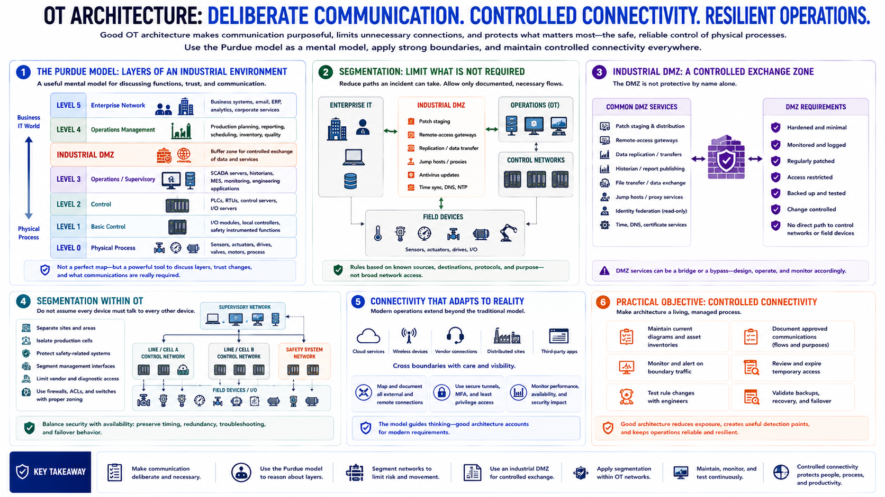

OT Architecture and Segmentation
Connecting to LMS... Progress: in progress

Narration
OT architecture should make communication deliberate. The Purdue model is a useful mental model for discussing layers of an industrial environment. At lower levels are the physical process, sensors, actuators, and basic control. Above them are supervisory systems and operations management. Enterprise services sit higher, with an industrial demilitarized zone, or industrial DMZ, often separating business and operational networks.
The model is not a perfect map of every modern facility. Cloud services, wireless devices, vendor connections, and distributed sites can cross traditional boundaries. Its value is that it forces teams to ask which functions belong together, where trust changes, and which communications are actually required.
Segmentation limits unnecessary connectivity between enterprise IT, operations systems, control networks, and field devices. A well-designed boundary permits documented business flows while reducing the ability of an incident to move directly toward critical control assets. Rules should be based on known sources, destinations, protocols, and operational purpose rather than broad network access.
An industrial DMZ can host services that exchange information across the IT and OT boundary, such as patch staging, remote-access gateways, replication services, or intermediary data transfer. This avoids direct connections from ordinary enterprise endpoints to control systems. The DMZ is not protective by name alone. Services must be hardened, monitored, maintained, and configured so they do not become an uncontrolled bridge.
Segmentation also applies within OT. Separate sites, production cells, safety-related functions, and management interfaces when risk and operations justify it. Avoid assuming that every device on an internal control network should communicate with every other device. At the same time, changes must preserve required timing, redundancy, troubleshooting, and failover behavior.
The practical objective is controlled connectivity. Maintain current diagrams, document approved flows, monitor boundary traffic, review temporary access, and test rule changes with engineers. Good architecture reduces exposure and creates useful detection points without making the physical operation brittle.